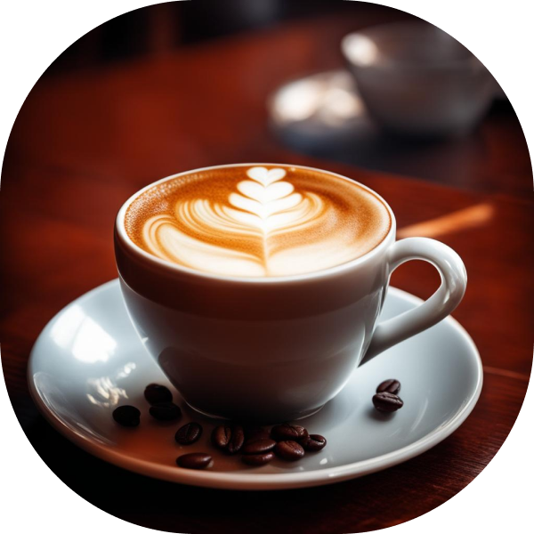
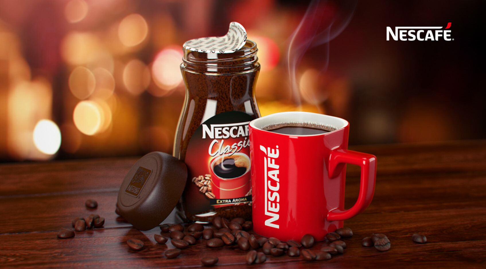
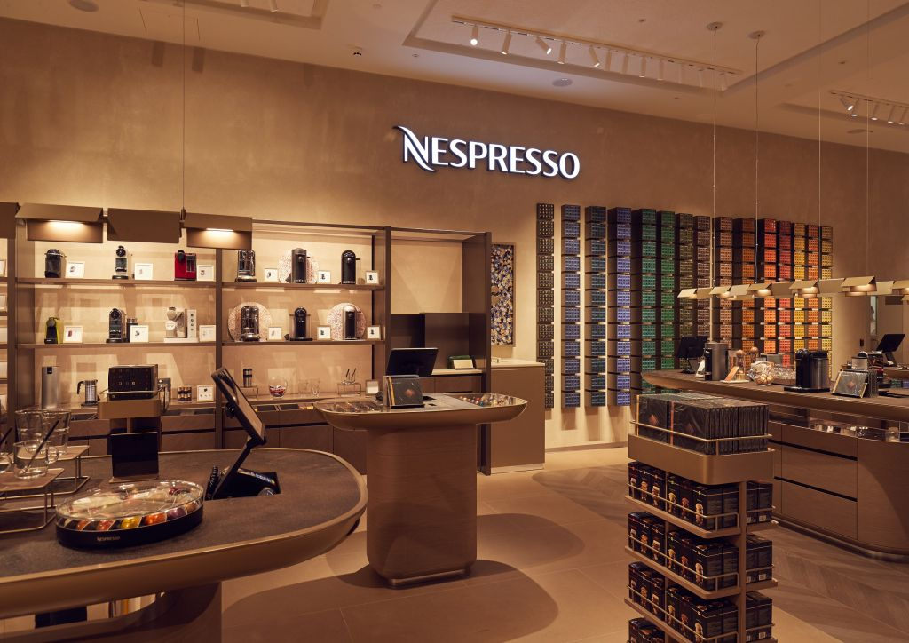
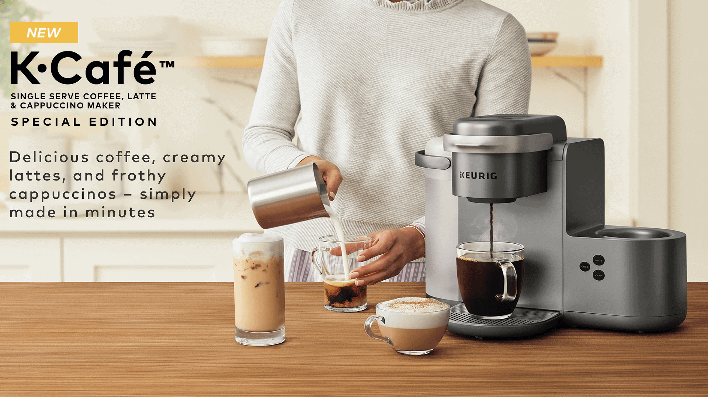

Что такое кофе?
Кофе - это напиток, который приготавливается из обжаренных и молотых зерен кофейного дерева. Напиток имеет разнообразные вкусы и ароматы, зависящие от сорта кофейных зерен, способа обжарки и приготовления. Кофе популярен во многих культурах и широко употребляется как утренний напиток или средство бодрствования.
Путь кофе
Выращивание
Сбор
Обработка зерна
Экспорт
Упаковка
Приготовление кофе
Сорта кофе
Арабика
(Coffea arabica) считается более качественным и дорогим видом кофе. Он предпочитает более высокие и холодные горные регионы, такие как Эфиопия, Кения, Колумбия и Бразилия. Зерна арабики имеют более сложный и фруктовый вкус, меньшую горечь и кислинку, а также более высокую кислотность. Арабика часто используется в особых сортах кофе, таких как эспрессо.
Робуста
(Coffea canephora) произрастает главным образом в низменных и теплых районах, таких как Вьетнам, Бразилия, Индия и Индонезия. Хотя робуста считается менее качественной, она обладает более сильным и горьким вкусом, более низкой кислотностью и более высоким содержанием кофеина по сравнению с арабикой. Робуста широко используется для приготовления растворимого кофе и смесей для эспрессо, чтобы придать им более полное тело и больше кофеина.
Виды кофе
Видов кофе существует великое множество и каждый обладает исключительным своим вкусом, ароматом.
Мы вам расскажем о самых популярных из них.
Одним из самых популярных видов кофе является американо. Для его приготовления используется эспрессо, разбавленное горячей водой. Американо обладает насыщенным ароматом и мягким вкусом, идеально подходит для тех, кто предпочитает не слишком крепкий кофе.
Вторым видом кофе является эспрессо. Это порционный кофе, приготовленный с помощью специальной кофемашины под высоким давлением. Эспрессо обладает насыщенным вкусом и крепостью, так как из него извлекается максимальное количество ароматических веществ и кофеина. Эспрессо является основой для многих других видов кофе, таких как латте, капуччино и другие.
Латте – это комбинация эспрессо и горячего молока. В отличие от эспрессо, латте имеет более нежный и кремовый вкус. Особенностью латте является также его внешний вид – на поверхности кофе образуется слой пены.
Капуччино также состоит из эспрессо, горячего молока и пены. Однако в отличие от латте, где молоко добавляется в большем количестве, в капуччино используется равное соотношение молока и эспрессо. При приготовлении кофе в капуччино образуется густая пена, которая придает напитку особый шарм.
Доппио – это сильное эспрессо, которое приготавливается из двойной порции кофейных зерен. Доппио обладает насыщенным вкусом и ярким ароматом, идеально подходит для любителей крепкого кофе.
Как пить кофе?
Наслаждаясь вкусом
Нет необходимости пить кофе без удовольствия. Найдите свой идеальный вкус напитка, выберите фирменный бленд (смесь кофе из разных стран, разных обработок и разновидностей) и наслаждайтесь вкусом каждого глотка.
Умеренность ключ к успеху
Не злоупотребляйте кофе, помните, что умеренность - это важный фактор любого стиля жизни. Каждый день лучше начинать с небольшой порции энергии в чашке!
Компании связанные с кофе
Существует множество компаний, связанных с кофе, которые предлагают различные продукты и услуги в этой области. Некоторые из них известны своими собственными кофейными брендами, а другие специализируются на оборудовании для приготовления кофе или на услугах по обжарке зерен.
Одна из самых известных компаний, связанных с кофе, это Starbucks - крупная сеть кофеен, распространенная по всему миру. Они предлагают широкий ассортимент кофейных напитков, выпечки и других продуктов для потребителей.
Второе место по популярности занимает Nescafé - мировая известная марка кофе, принадлежащая компании Nestle. Она предлагает широкий ассортимент продукции, начиная от растворимого молотого кофе до зернового кофе и капсульных аппаратов для приготовления кофе. Nescafé популярен во многих странах мира благодаря своему богатому вкусу и удобству в приготовлении.
Еще одна известная компания - Nespresso, специализирующаяся на продаже кофейных капсул и кофемашин для домашнего использования. Они известны своими высококачественными продуктами и уникальными вкусами кофе.
Компания Keurig также популярна среди потребителей благодаря своим кофейным аппаратам и широкому ассортименту кофейных капсул различных брендов.
Кроме того, есть множество мелких кофейных компаний, которые специализируются на обжарке кофейных зерен, разработке уникальных смесей, ручной обработке кофе, продаже кофейных напитков в своих заведениях и оборудованных автоматах. Эти компании обычно ориентированы на ценителей кофе и предлагают продукцию высокого качества.
У всех компаний большое разнообразие подходов к производству, маркетингу и устойчивому развитию, что делает индустрию кофе увлекательной и динамичной, привлекая внимание миллионов потребителей по всему миру.
В целом, компании, связанные с кофе, предлагают широкий выбор продуктов и услуг для всех любителей этого замечательного напитка.



Подборка картинок с кофе
Вывод
Кофе - это прекрасный напиток, который может помочь человеку стать немного счастливее в этом мире. Также это прекрасный способ зарядиться кучей энергии на начало дня.